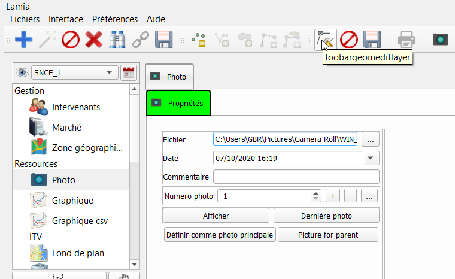

Imports des photos¶
Il s’agit du cas où les photos n’ont pas été prises directement avec Lamia mais avec un appareil photo numérique autre.
Deux cas de figure sont possibles :
Les photos ont quand même été créées dans Lamia en remplissant la champ « index » de la photo
les photos ont été prises complètement séparement (en utilisant la fonction « geolocalisation » de l’appareil).
Ces cas sont expliquées par la suite. Mais auparavant, il est important de comprendre comment ces photos sont stockées dans Lamia.
Fonctionnement de la base de données photos de Lamia¶
Les photos sont stockées dans le répertoire de ressource définis au début de projet et accessible via le menu Lamia/préférences/Open project directory. Au sein de ce répertoire, aller dans le répertoire « media » : les photos y sont stockées par répertoire contenant la date d’acquisition.
Le lien vers la photo est stocké dans la table « media_qgis », et dans le champ « file ». Le nom du lien doit être relatif au répertoire des ressources. Ainsi, le champ file doit être du type « .\media\[datedelaphoto]\[nomdelaphoto] ». Dans la table « media_qgis », le champ « typemedia » doit être égal à “PHO” pour que Lamia reconnaisse qu’il s’agit d’une photo.
Lorque les photos n’ont pas été prises directement avec Lamia, il faut donc :
Mettre les photos dans un sous répertoire du répertoire media
Créer et/ou actualiser le champ file de la table « media_qgis » pour que le chemin pointe bien vers le bon fichier.
Cas des photos prises totalement séparemment¶
Tout d’abord mettre les photos dans un sous-répertoire du répertoire media.
Importer les photos dans Lamia
Il faut tout d’abord utiliser un utilitaire qui converti les photos en fichier .shp (par exemple l’utilitaire « ImportPhoto » de QGis).
Ceci produit un fichier .shp contenant notamment le nom du fichier.
Utiliser ensuite l’outil d’import de Lamia pour importer ce fichier shp (voir doc à ce sujet). Il faut que le champ contenant le nom de la photo soit dirigé vers le champ « file » de « media_qgis ». Il faut aussi que le champ « typemedia » soit égal à “PHO”.
Pour ce faire, l’outil d’import doit ressembler à ça :
Noter que le champ file est transformé via un noeud « python » dont le code est ci dessous. Remplacer le texte entre guillemets à la 4° ligne pour avoir le chemin relatif voulu.
outputkey = 'output'
outputvals = []
for element in args['input']:
outputvals.append('./media/repertoirephoto/' + element)
return {outputkey: outputvals}
Lancer ensuite l’import et les photos sont bien rensignées dans Lamia !
Cas des photos prises référencées avec Lamia en utilisant l’index mais enregistrées ailleurs¶
Tout d’abord mettre les photos dans un sous-répertoire du répertoire media.
Ensuite, activer le menu « Interface/Bureau » et aller sur l’onglet « Photos ».
Clicker sur l’icone d’édition de table.
La table modifiable « media » apparait dans le panneau des couches.
Cliquer alors sur l’icone QGis « Calculatrice de champs » (le boulier), et choisir « mise à jour d’un champ existant » et choisir le champ « file ».

Rentrer la formule voulue. Le champ de l’index de la ressource est le champ « ressourceindex ».
Attention :
il faut rentrer deux fois “\\” si l’on veut que la valeur ecrite dans la table soit “\”
Dans le cas de l’existence de photos déjà bien renseignées dans Lamia, si on n’utilise pas les éléments conditionnels dans l’éditeur d’expression, cela écrasera les champs « file » déjà bien renseignés.
Cliquer enfin sur OK, revenir dans la fenêtre Lamia et cliquer sur l’enregistrement des modifications de la table


{kind=link}
{kind=link}